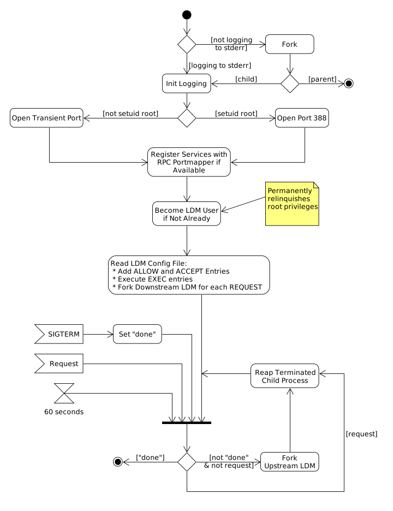

LDM 6 Behavior
This page describes the behavior of the LDM 6 program.
Contents
Top-level ldmd behavior

When executed, the ldmd program does the following:
- If the LDM logfile is not
standard error, then the program forks
itself and the parent process terminates. The
child process detaches itself from the
process group of the
parent process and becomes a
process group leader.
- Initializes logging and logs a "Starting Up" message.
- Establishes an Internet port that will be used for incoming connections. If the program is
set-uid-root, then the port number will be 388; otherwise, the port
number will be decided by the operating system.
- Registers the LDM 5 and LDM 6 services with
the RPC portmapper (if it is available)
using the port number from the previous step.
- Reads the LDM configuration-file, ldmd.conf, and does the following:
- Goes into a loop in which it alternately:
- Accepts the termination of any child processes; and
- Listens on the previously-established port for incoming connections from other
LDMs. When a connection is made, the program does the following:
- Validates the other LDM against the internal database of
ALLOW and ACCEPT entries. If
the LDM is not allowed to connect, then the connection is terminated;
otherwise,
- Forks an asynchronous copy of
itself to service the connection. The child process will be an
upstream LDM if the first incoming message is a
FEEDME or NOTIFYME; otherwise, if the
first incoming message is a HIYA, then the
child process will be a
downstream LDM.
Downstream LDM 6 behavior

A downstream LDM does the following:
- Sets the initial data-product selection-criteria. The initial "start" time
is set as follows:
- If a "time offset" option was specified on the ldmd command-line, then the
"start" time is set to the current time minus the specified time offset; otherwise,
- The "start" time is set to the current time minus the value of the "maximum latency" option
(default: 1 hour).
- Obtains the metadata of the most recently-received
data-product corresponding to the
data-product selection-criteria. If the home-directory of the
LDM user contains a metadata file
corresponding to the data-request and the upstream LDM, then the
metadata in that file is read and used; otherwise, the
metadata of the most recent
data-product in the
product-queue that matches the
data-product selection-criteria is used.
- Encodes into the data-request the data-product signature of the
metadata from the previous step, if available, so that the
upstream LDM can start sending
data-products from where the previous
downstream LDM left off.
- Enters a loop that terminates when a successful FEEDME request is made to
the upstream LDM:
- Receives data-products over the connection contained in
HEREIS or COMINGSOON and
BLKDATA messages. When the product has completely arrived, it is inserted
into the product-queue and a
SIGCONT signal is then sent to the LDM
process group. The
data-product creation-time is used to update the "start" time in the
current data-product selection-criteria.
- If nothing has been received in 60 seconds, then the process connects to the top-level
ldmd on the upstream host and uses an
IS_ALIVE message to inquire whether or not the relevant
upstream LDM process is still running:
- If the upstream LDM terminated, then the process closes the
connection and returns to step 2, above; otherwise,
- The process continues to wait for data-products.
Upstream LDM 6 behavior
An upstream LDM does the following:
- Reduces the data-product selection-criteria contained in the
FEEDME or NOTIFYME request by the criteria
specified in the first relevant ALLOW entry.
- If the subsequent request is a FEEDME request and the
anti-DOS feature is enabled, then
- If the request duplicates or is a superset of a previous FEEDME request
from the same downstream site that is currently being handled by another
upstream LDM process, then that other process is sent a termination
signal (a request is a superset of another if its
data-product identifier-matching ERE
pattern is syntactically identical to the other and its feedtype
specification is a superset of the other); otherwise,
- The request is further reduced by existing FEEDME requests from the same
downstream host.
- If the subsequent request is not equal to the original request, then the process informs the
downstream LDM about the reduced request via a
RECLASS message.
- If the subsequent request is not equal to the original request, then the process continues to listen;
otherwise,
- The process acknowledges the request and begins sending matching
data-products from the
product-queue to the
downstream LDM using the primary or alternate
transfer-mode (for FEEDME requests)
or NOTIFICATION messages (for
NOTIFYME requests).
- If the process reaches the end of the product-queue, then it sends a
NULLPROC message to the
downstream LDM) to reduce
data-product latency by flushing the connection and then
suspends itself for 30 seconds or until reception of a SIGCONT signal (from
an ingester or downstream LDM
running on the local host) whichever occurs first.
- If nothing has been sent to the downstream LDM in 30 seconds, then
the process sends a NULLPROC message.
Pqact(1) behavior
A pqact process does the following:
- Gets the position in the product-queue of the last successfuly-processed data-product from the previous
session if it's available.
- Tries to get the next data-product in the product-queue.
- If a product exists, then the process goes into a loop in which it executes the actions of all matching
entries from the configuration-file.
- Otherwise if no next product exists, then the process waits until one of three things happens:
- A SIGCONT is received.
- A SIGTERM is received.
- 30 seconds elapses.
- If a SIGCONT is received or 30 seconds elapses, then the process returns to step 2.
- If a SIGTERM is received, then the process terminates after saving the position in the queue of the last
successfully-processed product.